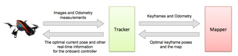
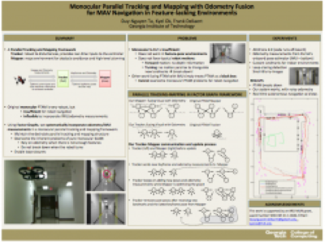

Projects

Monocular Parallel Tracking and Mapping with Odometry Fusion
UPDATE 2014-04: Our RAS journal paper combining this Parallel framework, Wall-Floor Features and Vistas for autonomous indoor navigation has been accepted for publication!
This is my attempt to improve autonomous indoor flight. Our current framework with Wall-Floor Features and Vistas is too
slow for real-time control, so we try to improve its speed with a parallel tracking and mapping framework similar to PTAM. The fast tracking thread maintains real-time localization while the slow mapping thread allows high quality wall structure inference.
Unfortunately, although PTAM and other pure feature-based monocular SLAM systems are great, they don’t work for robots with a single frontal camera in typical indoor environments. The first reason for their failure is that there are not enough corner-type features in the scene, while PTAM typically needs hundreds features to work robustly. The second reason is more important: There are not enough motion parallax to build and maintain a good map, due to the typical robot motions. Since the robot typically moves forward and most features are in front of it, we cannot get reliable depth information. When the robot yaws away from a known map towards unknown regions, PTAM will also break down since it cannot triangulate new landmarks for the map and hence not being able to localize itself.
Thus, we have to fuse monocular PTAM with odometry measurements to cope with the lack of features, and maintain robustness during pure camera rotations. Unfortunately, other PTAM-odometry fusion methods treats PTAM as a black box, so they cannot prevent PTAM’s breakdown in these cases.
Using factor graphs, we developed a new parallel tracking and mapping framework that is suitable for robot navigation by fusing visual data with odometry measurements in a principled manner. More details can be found in our workshop paper.

With this framework, we can finally enable the ARDrone to fly and turn autonomously. This is the first autonomous turn with our parallel framework:
And here is the complete mission towards the end of the hallway. The video stops a bit because our Wifi connection was lost right after the drone turned. I was sitting quite far away and had to run after it to see what happened.
Tuesday, October 8, 2013
